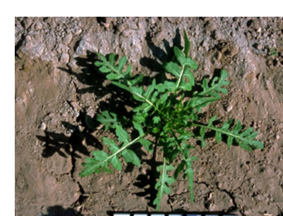
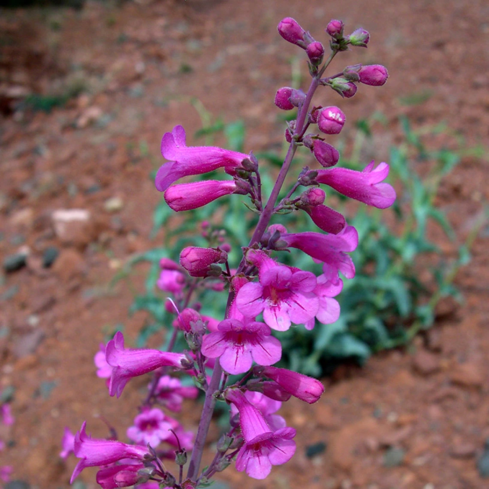
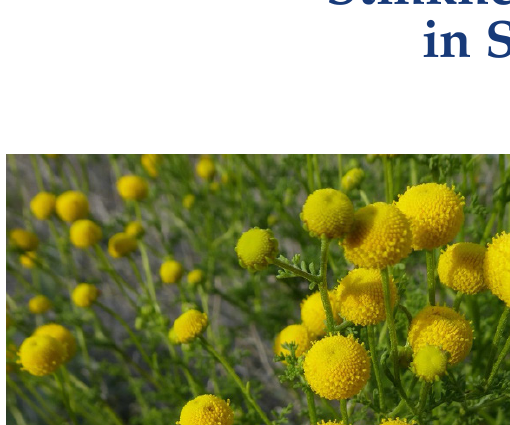
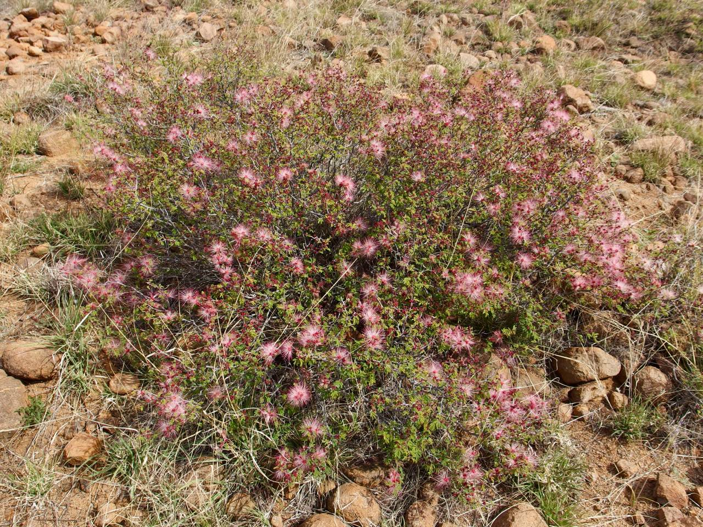
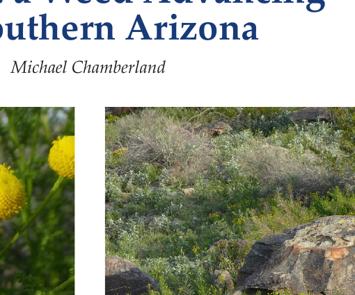
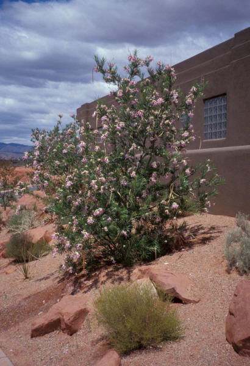
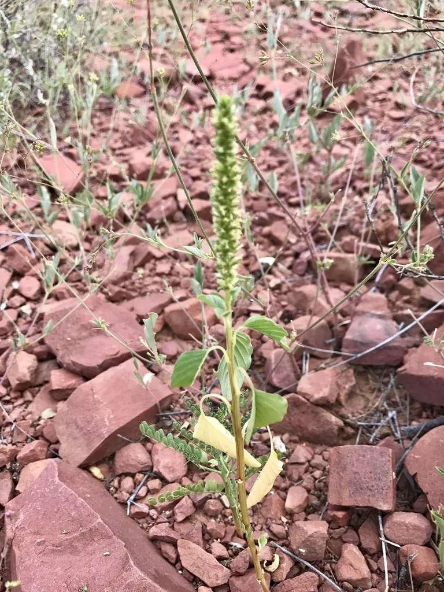
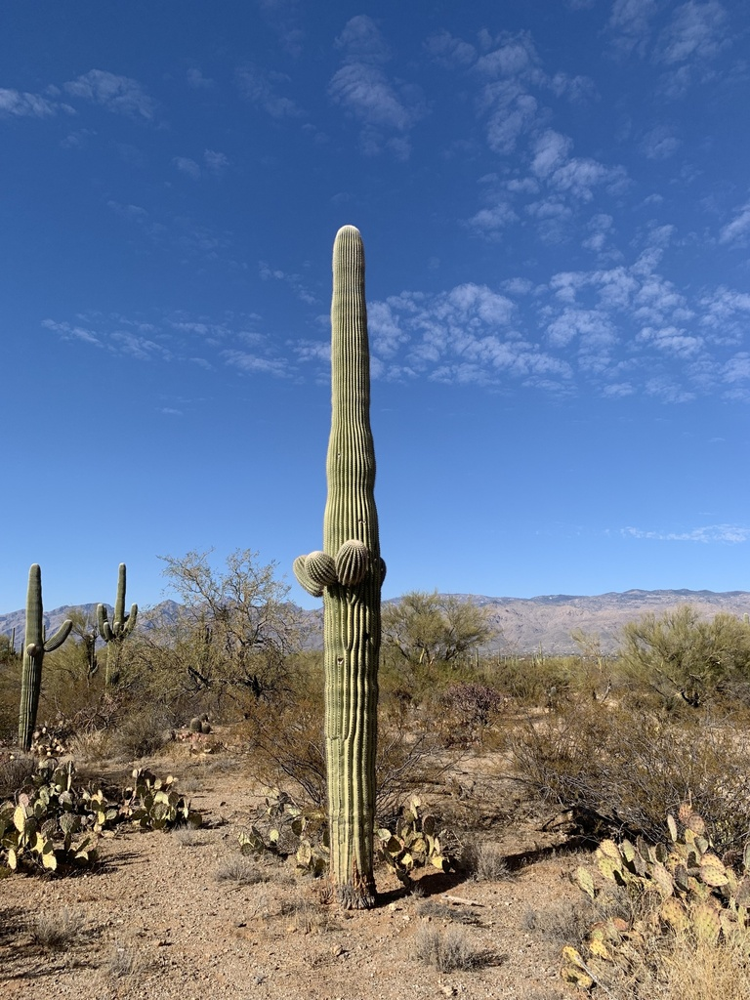
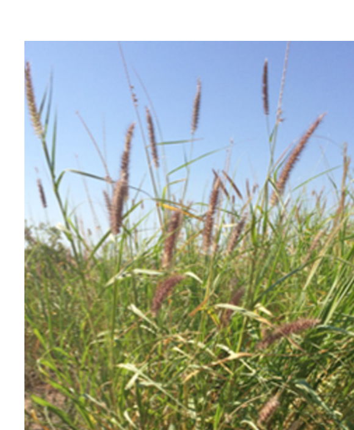

Tucson Sonoran Desert Garden Calendar
January
To remove
- London rocket (Sisymbrium irio)
Winter annual. Pull young rosettes and remove before seed production.

- Sweet clover (Melilotus indica)
Remove unwanted winter annuals while soil is moist and plants are small.
Source: UA Cooperative Extension — January Monthly Gardening Guide for Pima County
- Stinknet (Oncosiphon pilulifer)
Monitor newly emerging rosettes after winter rain; bag pulled plants.
Source: UA Cooperative Extension — Stinknet in Southern Arizona
To sustain plant
- Parry's penstemon (Penstemon parryi)
Native Sonoran Desert spring wildflower; excellent for hummingbirds.

Source: Pima County Master Gardeners — Native Plants of the Tucson Area
- Desert willow (Chilopsis linearis)
Native tree for appropriate wash-like or moister landscape positions.
February
To remove
- London rocket (Sisymbrium irio)
Often conspicuous and flowering now; pull before pods mature.
- Stinknet (Oncosiphon pilulifer)
Remove flowering plants before seed set and bag them.

Source: UA Cooperative Extension — Stinknet in Southern Arizona
- Sweet clover (Melilotus indica)
Remove before flowering and seed production if unwanted.
Source: UA Cooperative Extension — February Monthly Gardening Guide for Pima County
To sustain plant
- Parry's penstemon (Penstemon parryi)
Spring bloom approaches; protect seedlings and avoid confusing them with mustard rosettes.
Source: Pima County Master Gardeners — Native Plants of the Tucson Area
- Fairy duster (Calliandra eriophylla)
Native shrub; a good time to establish container-grown plants before extreme heat.

March
To remove
- London rocket (Sisymbrium irio)
Pull before the long slender pods mature.
- Stinknet (Oncosiphon pilulifer)
Flowering is a critical control window; bag plants and do not let them seed.
- Buffelgrass (Cenchrus ciliaris)
Inspect landscaped and disturbed areas; remove before seed dispersal where feasible.
Source: UA Cooperative Extension — Weeds
To sustain plant
- Parry's penstemon (Penstemon parryi)
- Desert marigold (Baileya multiradiata)
Native, drought-tolerant wildflower with a long bloom season.
April
To remove
- Stinknet (Oncosiphon pilulifer)
Remove before seed set; dried plants become a wildfire-fuel concern.

Source: UA Cooperative Extension — Stinknet in Southern Arizona
- London rocket (Sisymbrium irio)
Remove remaining flowering or fruiting plants before seed dispersal.
- Buffelgrass (Cenchrus ciliaris)
Remove seed-producing plants where practical.
Source: UA Cooperative Extension — Weeds
To sustain plant
- Desert marigold (Baileya multiradiata)
Flowering season begins strongly in Tucson.
- Fairy duster (Calliandra eriophylla)
May
To remove
- Puncturevine / goathead (Tribulus terrestris)
- Buffelgrass (Cenchrus ciliaris)
Inspect before seed dispersal; cured grass is highly flammable.
Source: UA Cooperative Extension — Weeds
- Horse purslane (Trianthema portulacastrum)
Warm-season annual in disturbed or irrigated areas; remove young mats if unwanted.
Source: UA Cooperative Extension — Weeds
To sustain plant
- Desert willow (Chilopsis linearis)
Native flowering tree; best in a landscape position with more available moisture.

- Desert marigold (Baileya multiradiata)
Native spring/summer wildflower.
June
To remove
- Puncturevine (Tribulus terrestris)
- Horse purslane (Trianthema portulacastrum)
Remove young plants before they spread and seed.
Source: UA Cooperative Extension — Weeds
- Buffelgrass (Cenchrus ciliaris)
Dried grass can become major fire fuel; prioritize plants around structures and access routes.
Source: UA Cooperative Extension — Weeds
To sustain plant
- Desert willow (Chilopsis linearis)
Summer-flowering native tree; provide appropriate supplemental water during establishment.
- Chuparosa (Justicia californica)
Native hummingbird shrub for hot, well-drained sites.
July
To remove
- Palmer amaranth / carelessweed (Amaranthus palmeri)
Summer annual; remove before mature seed production.

Source: UA Cooperative Extension — Weeds
- Puncturevine (Tribulus terrestris)
Continue removing flowering and fruiting plants.
Source: UA Cooperative Extension — Weeds
- Horse purslane (Trianthema portulacastrum)
Remove unwanted mats before seed production.
Source: UA Cooperative Extension — Weeds
To sustain plant
- Saguaro (Carnegiea gigantea)
Iconic Sonoran native; do not overwater established plants.

Source: iNaturalist — Saguaro observation in Saguaro National Park, Tucson
- Desert willow (Chilopsis linearis)
Native summer-flowering tree.
August
To remove
- Palmer amaranth (Amaranthus palmeri)
- Puncturevine (Tribulus terrestris)
Collect burs and remove plants to prevent spread on shoes, tires, and animals.
Source: UA Cooperative Extension — Weeds
- Buffelgrass (Cenchrus ciliaris)
Prioritize dry, cured plants near structures and pathways.
Source: UA Cooperative Extension — Weeds
To sustain plant
- Chuparosa (Justicia californica)
Native low-desert shrub and hummingbird resource.
- Fairy duster (Calliandra eriophylla)
September
To remove
- Puncturevine (Tribulus terrestris)
- Palmer amaranth (Amaranthus palmeri)
Remove before seed release.
Source: UA Cooperative Extension — Weeds
- Buffelgrass (Cenchrus ciliaris)
Remove or manage dry stands, especially in defensible-space zones.
Source: UA Cooperative Extension — Weeds
To sustain plant
- Fairy duster (Calliandra eriophylla)
- Desert willow (Chilopsis linearis)
Native tree suitable for appropriate moist microhabitats.
October
To remove
- Puncturevine (Tribulus terrestris)
Remove dried plants and burs before they are transported around the property.
Source: UA Cooperative Extension — Weeds
- Buffelgrass (Cenchrus ciliaris)
Inspect dry stands and prioritize wildfire-risk areas.

Source: UA Cooperative Extension — Weeds
- Sweet clover (Melilotus indica)
First winter seedlings may appear after autumn moisture.
Source: UA Cooperative Extension — October Monthly Gardening Guide for Pima County
To sustain plant
- Saguaro (Carnegiea gigantea)
Native structural plant; fall is a good time to plan desert landscaping rather than add summer irrigation.
Source: iNaturalist — Saguaro observation in Saguaro National Park, Tucson
- Fairy duster (Calliandra eriophylla)
Native shrub for sunny, well-drained sites.
November
To remove
- London rocket (Sisymbrium irio)
New winter rosettes emerge after autumn/winter rain; pull while small.
- Sweet clover (Melilotus indica)
Remove unwanted rosettes before flowering.
Source: UA Cooperative Extension — November Monthly Gardening Guide for Pima County
- Stinknet (Oncosiphon pilulifer)
Monitor disturbed soil after rain; early removal is much easier than removing established seed-producing plants.
Source: UA Cooperative Extension — Stinknet in Southern Arizona
To sustain plant
- Parry's penstemon (Penstemon parryi)
Sow or establish for spring display where appropriate.
Source: Pima County Master Gardeners — Native Plants of the Tucson Area
- Desert willow (Chilopsis linearis)
Deciduous native tree; plant in suitable wash or rainwater-harvesting positions.
December
To remove
- London rocket (Sisymbrium irio)
Winter annual; easiest to remove at the rosette stage.
- Sweet clover (Melilotus indica)
Remove young winter plants if unwanted.
Source: UA Cooperative Extension — December Monthly Gardening Guide for Pima County
- Stinknet (Oncosiphon pilulifer)
Winter emergence can begin after rainfall; identify carefully and bag pulled plants.
Source: UA Cooperative Extension — Stinknet in Southern Arizona
To sustain plant
- Parry's penstemon (Penstemon parryi)
Prepare for spring flowering.
Source: Pima County Master Gardeners — Native Plants of the Tucson Area
- Desert marigold (Baileya multiradiata)
Native low-water wildflower; protect desirable volunteers.
Identification notes
London rocket can produce thousands of seeds; Arizona Invasive Plants recommends manual removal while young, at the basal-rosette stage. Stinknet is a rapidly spreading invasive annual in southern Arizona. University of Arizona guidance emphasizes early detection, repeated control, and preventing seed spread. Do not burn it. Buffelgrass and other invasive grasses can become serious wildfire fuels. Prioritize removal around structures and in defensible-space zones. Puncturevine is easiest to manage before its characteristic spiny burs mature. Palmer amaranth is native to Arizona, but it can still be an unwanted garden weed; "remove" here means remove where it is unwanted, not eradicate the native species from the landscape. Many native Sonoran plants can appear spontaneously in a garden. Identify them before pulling them.
General Notes
References
University of Arizona Cooperative Extension — Weeds Pima County Invasive Species Program Arizona Invasive Plants — London rocket University of Arizona Cooperative Extension — Stinknet in Southern Arizona Pima County Master Gardeners — Native Plants of the Tucson Area Arizona Native Plant Society — The Plant List City of Tucson — Landscape Maintenance Manual Tucson Audubon — Guide to Controlling Backyard Weeds
Image credits
london_rocket.png — cropped from City of Tucson, Landscape Maintenance Manual, p. 15; photo credited in the document to University of Arizona Cooperative Extension Photo Library.
buffelgrass.png — cropped from City of Tucson, Landscape Maintenance Manual, p. 15; photo credited in the document to Arizona-Sonora Desert Museum / Beat Back Buffelgrass.
horse_purslane.png — cropped from City of Tucson, Landscape Maintenance Manual, p. 15; photo credited in the document to University of Arizona Cooperative Extension Photo Library.
sweet_clover.png — cropped from City of Tucson, Landscape Maintenance Manual, p. 15; photo credited in the document to University of Arizona Cooperative Extension Photo Library.
stinknet_bloom.png and stinknet_habitat.png — cropped from University of Arizona Cooperative Extension, Stinknet: a Weed Advancing in Southern Arizona, revised December 2023.
puncturevine.jpg — New Mexico State University, Selected Plants of Navajo Rangelands; direct image associated with the Puncturevine entry.
palmer_amaranth.webp — PictureThis species image; use as an identification reference rather than a license claim.
parrys_penstemon.webp — University of Arizona EcoRestore Portal, Penstemon parryi.
desert_willow.jpg — Landscape Arizona, Desert Willow page.
fairy_duster.jpg — Arizona Native Plant Society, Fairy Duster page.
saguaro.jpg — iNaturalist observation 258181216, Saguaro National Park, Tucson; attribution remains with the original photographer.
Disclaimer
This is a practical garden calendar, not a regulatory invasive-species list. For regulated or potentially hazardous plants, follow current Pima County, Arizona, and University of Arizona guidance.